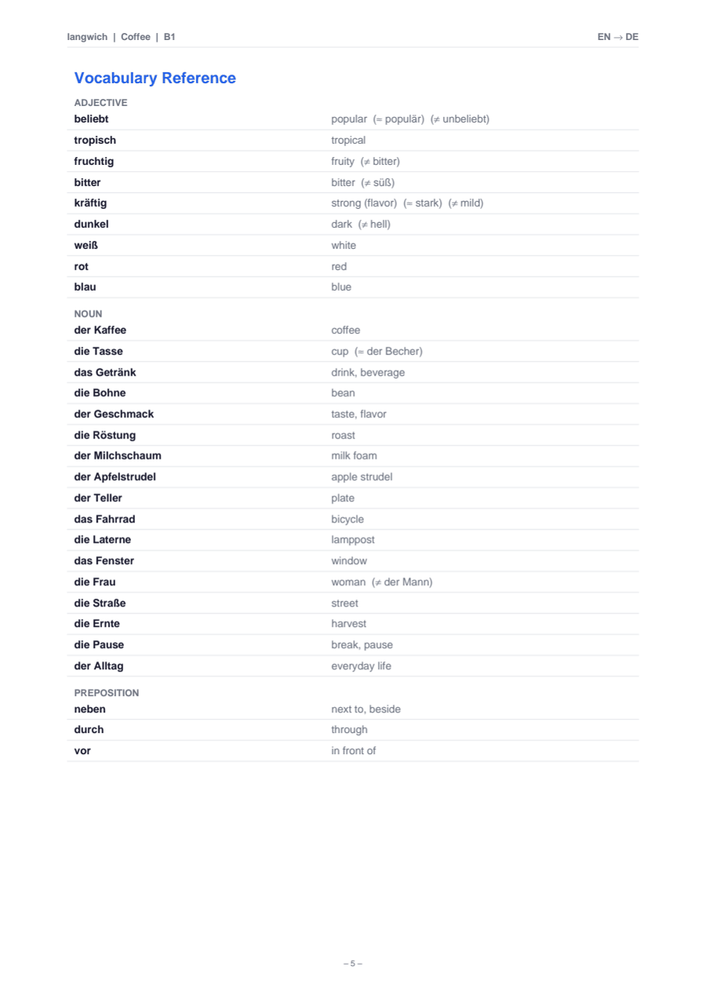
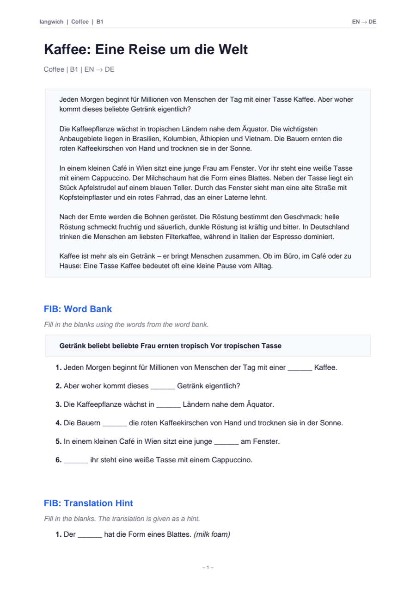

AI-generated worksheets for print & e-paper
Screens generate.
Paper teaches.
langwich turns any AI into a worksheet author. It writes a short text at your level, mines it for vocabulary and grammar, and builds exercises around it — then renders everything into a clean, print-ready PDF. You print it, sharpen a pencil, and switch the screen off.


examples/coffee_en_de.json rendered to a
print-ready A4 worksheet (EN → DE, level B1).
The analogue case
Why paper, in an age of bottomless feeds?
Every language app shares a glass rectangle with your inbox, your group chats and a dozen infinite feeds — each engineered to interrupt you. langwich makes the opposite trade: the digital world generates, the analogue world teaches.
Paper doesn’t ping
A worksheet has no notification badge, no autoplay, no “just one more” loop. The only thing that happens next is the word you write.
Handwriting sticks
Writing by hand recruits motor and visual systems that tapping glass never touches — and study after study links it to better recall and deeper understanding.†
A worksheet ends
Feeds are engineered to be bottomless. A sheet of paper is finished when it’s full — completion, not a streak, is the reward.
Easy on eyes and sleep
Clean A4 layouts made for print and e-paper: readable in full sunlight, and nothing glowing at your face at 11 pm.
Nothing to lose
No account, no subscription, no streak to protect. Your worksheets are PDF files on your own disk — they’ll still open in twenty years.
Screens where they shine
Let the AI do what it’s good at — writing texts, picking vocabulary, building exercises in seconds. Then take the paper somewhere the Wi-Fi can’t follow.
† For instance Mueller & Oppenheimer, Psychological Science (2014), on longhand note-taking and conceptual learning; van der Weel & van der Meer, Frontiers in Psychology (2024), on brain connectivity during handwriting.
The workflow
From prompt to printout in three steps
langwich is deliberately split in two: an AI generates the content, a small Python tool renders the paper. No API calls, no keys, no accounts.
Ask your AI
“A B1 German worksheet about coffee, for an English speaker.” Any assistant that can write JSON is qualified — Claude, ChatGPT, Gemini, or the model running on your own laptop.
It writes one JSON file
A short text in the target language — the gold mine — plus its translation, 20–30 vocabulary items, grammar notes and a picture scene. The format is documented in the README.
langwich renders the PDF
langwich --from-json coffee_en_de.json — exercises, vocabulary
reference and grammar page included. Print it, or send it to your e-reader.
What lands on the page
One text. 21 kinds of exercise.
langwich is built on an exercise knowledge graph: every exercise type declares what it needs, what it produces and which exercises it feeds. From a single source text it derives 4 exercise families, graded by difficulty from 1 to 5 — plus vocabulary and grammar reference pages. (These numbers aren't hand-written, by the way — they're read from the graph on every deploy.)
Fill in the Blanks
7 variants · difficulty 2–4Words vanish from the text. Hints range from a full word bank down to nothing at all.
Picture
6 variants · difficulty 1–5The text describes a scene; your AI can illustrate it. Then: name the colours, mark the objects, describe who is standing where.
Word Connections
5 variants · difficulty 1–4Vocabulary mined from the text, then paired and grouped — the classic connect-the-columns exercises.
Media & Research
3 variants · difficulty 2–3The worksheet sends you hunting: find a documentary, an article, a fact about the topic — in the target language. Deliberately without links; the searching is part of the exercise.
Bring your own AI
Works with the AI you already use
langwich calls no API and stores no key — the Python side only renders. The content comes from whichever assistant you already use, pay for, or run locally. Three ways in:
The repository ships a /langwich slash command.
Claude walks you through native language, target language, topic and CEFR level,
writes the JSON, and renders the PDF — all in one conversation. This is the
most comfortable way in.
git clone https://github.com/joernmht/langwich
cd langwich
pip install -e .
claude
> /langwich
Works in the Claude Code CLI, the desktop app, and on claude.ai/code.
No terminal-based AI? Any chat assistant that can write JSON works — ChatGPT, Gemini, Claude.ai, Le Chat, or a local model.
- Copy the prompt below into a new chat and edit the three About me lines.
- Save the JSON it returns as
data/coffee_en_de.json(the JSON only, no backticks). - Render it:
langwich --from-json data/coffee_en_de.json
You are a language-learning content author for langwich
(https://github.com/joernmht/langwich), a tool that renders
worksheet PDFs from a JSON source file.
About me — edit these three lines:
My native language: English (source_lang "en")
I am learning: German (target_lang "de")
Level and topic: B1, "coffee"
Write my worksheet source. Reply with ONE json code block and
nothing else, in exactly this structure:
{
"title": "a title in the target language",
"content": "a coherent multi-paragraph text in the TARGET language
at my level (B1: 250-350 words). Informative and true - a small
essay, not filler. Exactly one paragraph must describe a concrete
visual scene. Separate paragraphs with blank lines.",
"translation": "the same text in my native language",
"source_lang": "en",
"target_lang": "de",
"cefr_level": "B1",
"topic": "coffee",
"picture_scene": {
"description": "an image-generation prompt for the scene paragraph,
in English",
"elements": ["4-8 visible objects with their colours, in the target
language, all of which appear in the text"],
"paragraph_index": 2
},
"vocabulary": {
"items": [
{
"term": "der Kaffee",
"translation": "coffee",
"pos": "noun",
"semantic_type": "drink",
"synonym": null,
"antonym": null
}
]
},
"grammar": {
"phenomena": [
{
"name": "name of a grammar phenomenon",
"description": "one or two plain-language sentences about it",
"examples": ["a sentence taken from the text"]
}
]
}
}
Rules:
- 20-30 vocabulary items, all taken from the text: mostly nouns and
verbs, several adjectives, a few prepositions ("pos" is one of:
noun, verb, adjective, adverb, preposition).
- "semantic_type" is one of: color, position, clothing, food, drink,
furniture, body, animal, profession, emotion, weather, time, other.
Include some colour words (semantic_type "color") and position
words (semantic_type "position") so that the picture exercises work.
- Add synonyms and antonyms where they exist naturally, else null.
- 2-4 grammar phenomena that genuinely occur in the text.
Any coding agent — Cursor, Copilot, Codex CLI, Claude Code — can drive langwich end-to-end, because the JSON format is documented in the repository itself. One instruction is enough:
Read README.md and examples/coffee_en_de.json. Then write a worksheet source JSON for a B2 French worksheet about astronomy (my native language is English) to data/astronomy_en_fr.json and render it with: langwich --from-json data/astronomy_en_fr.json
Agents that run headless can put fresh material on your desk every morning — for example with Claude Code’s print mode from cron:
# a fresh worksheet every morning at 06:30
30 6 * * * cd ~/langwich && claude -p "Read README.md, then generate \
a new B1 Spanish worksheet on a surprising topic and render it"
Pair it with an e-paper device or a duplex printer and the day starts with a worksheet instead of a feed.
Get started
Five commands to your first worksheet
Python 3.11 or newer and a single dependency
(reportlab). The repository includes
2 complete, working examples, so you can render a
worksheet before involving any AI at all.
Then print data/coffee.pdf — black-and-white duplex is fine —
and put your phone in another room.
git clone https://github.com/joernmht/langwich cd langwich pip install -e . # render the bundled example → data/coffee.pdf langwich --from-json examples/coffee_en_de.json # list all 21 exercise types langwich --list-exercises # or pick your own selection langwich --from-json examples/coffee_en_de.json \ --exercises fib_word_bank,pic_color_query,wc_translation